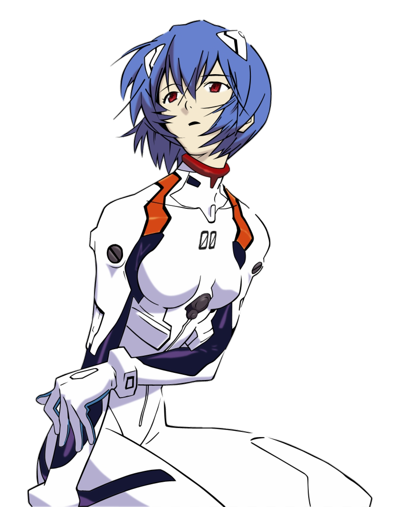
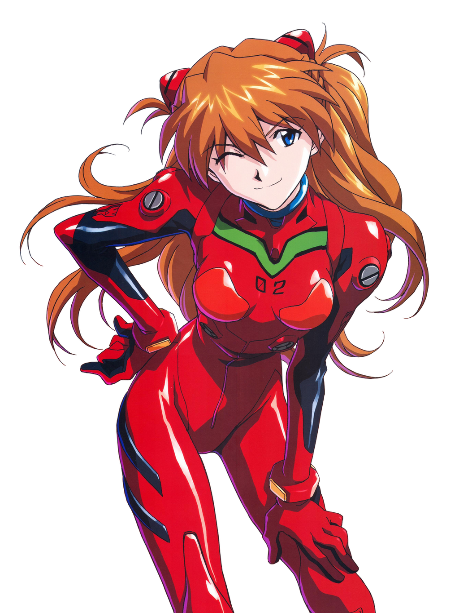
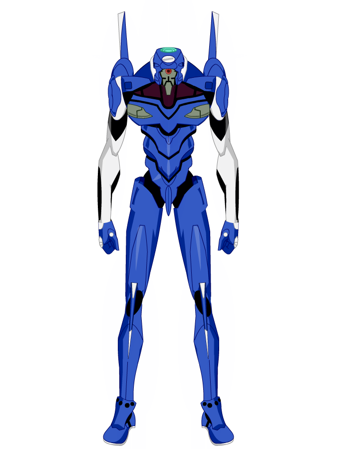
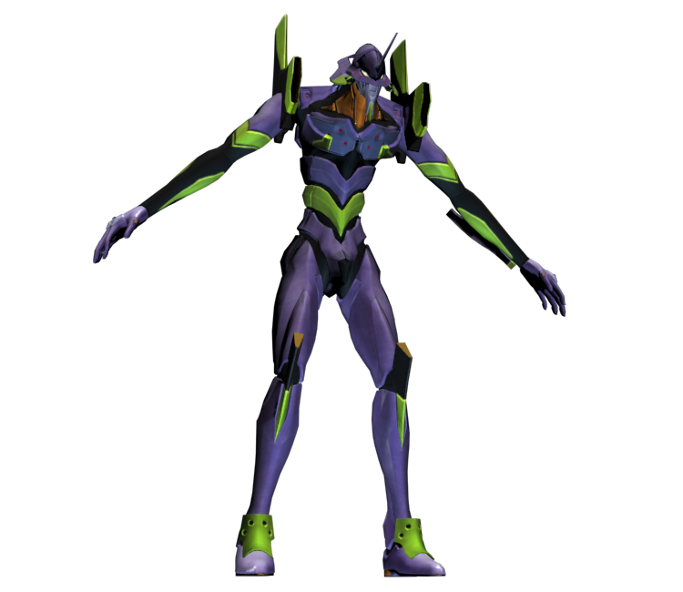
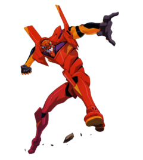

Strona o Evangelionie

NERV (po niemiecku „nerve”) to specjalna organizacja utworzona w celu zwalczania Aniołów po Drugim Uderzeniu, jest organizacją odpowiedzialną za stworzenie Evangelionów.
Rei Ayanami

Rei Ayanami to fikcyjna postać z japońskiej franczyzy Neon Genesis Evangelion stworzonej przez Gainax. Rei jest Pierwszym Dzieckiem i pilotem Jednostki 00. Na początku serii Rei jest zagadkową postacią, której niezwykłe zachowanie konfunduje jej rówieśników.
Shinji Ikari

Shinji Ikari – fikcyjna postać z serii Neon Genesis Evangelion stworzonej przez studio Gainax. Jest on protagonistą i jedną z najbardziej rozpoznawalnych postaci tej serii.
Asuka Langley Soryu

Asuka Langley Soryu jest fikcyjną postacią z serii Neon Genesis Evangelion. W ramach serii zostaje wyznaczona jako „drugie dziecko” i pilot Jednostki 02. Jej nazwisko zostało zromanizowane jako Soryu w mandze i Sohryu w serialu, filmie oraz na stronie internetowej Gainax.
Evangeliony
W serii anime Neon Genesis Evangelion, Evangeliony (w skrócie Evy lub EVy), to mechy pilotowane przez dzieci wybierane przez NERV. Nie są to zwykłe mechaniczne roboty, ale biomechaniczne hybrydy z wieloma częściami biologicznymi współistniejącymi z mechaniczną infrastrukturą.
Jednostka 00 (Eva00)

Evangelion-00 to pierwsza funkcjonalna jednostka Evangelion stworzona, służąca jako prototyp dla reszty serii Evangelion. Jest pilotowany przez Rei Ayanami.
Jednostka 01 (Eva01)

Evangelion-01 jest pierwszą nieprototypową jednostką Evangelion i jest określana jako „TYP TESTOWY EVA-01”. Mieści się w nim dusza matki Shinjiego, Yui Ikari. Jest pilotowany głównie przez Shinjiego Ikari. Jednostka-01 jest flagowym modelem tej serii.
Jednostka 01 (Eva01)
